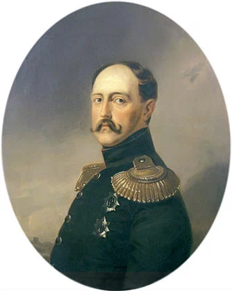
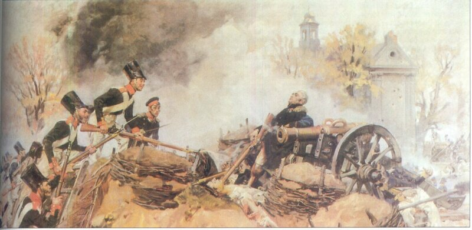

Вы грозны на словах — попробуйте на деле!
Иль старый богатырь, покойный на постеле,
Не в силах завинтить свой измаильский штык?
Иль русского царя уже бессильно слово?
Иль нам с Европой спорить ново?
Иль русский от побед отвык?
Иль мало нас? Или от Перми до Тавриды,
От финских хладных скал до пламенной Колхиды,
От потрясенного Кремля
До стен недвижного Китая,
Стальной щетиною сверкая,
Не встанет русская земля?..
Так высылайте ж к нам, витии,
Своих озлобленных сынов:
Есть место им в полях России,
Среди нечуждых им гробов.
Пушкин «Клеветникам России»
Я выпущен был из 75 человек - семнадцатым, хотя по науке был третий. Привели нас в Зимний дворец в кадетских мундирах. Государь, видно, был сильно не в духе, обозвал мужиками-чучелами и отослал учиться фрунту и выправке обратно в Корпус, так что заместо того, чтобы надеть эполеты до праздника, нас всё Рождество учили и казнили гвардейские ефрейтора, и только 8 января 1841 года я сделался мичманом флота.

Портрет Николая I. Неизвестный художник первой половины XIX века. Музей изобразительных искуств республики Карелия. Петрозаводск
… первое впечатление было приятное. На другой день пошли отыскивать товарищей. Устроились, конечно, на храпок, нищенски, жили впятером, валяясь на полу, но не грустили, ибо скоро приобвыкли. Дулись в Летнем саду в кегли до изнеможения. Но пришла пора служить. Корабль наш назывался "Вола". Был о 84 пушках. Правильнее его было называть "Воля" в память взятия укрепления "Воля" в польском мятеже, но Государь Николай Павлович чужой воли не допускал, потому-то так его и окрестил.
Прискакали адъютанты
От Паскевича и молят:
«Генерал, отдайте саблю,
Погибать за зря не стоит».
Словно пред отцом родимым,
Упадают на колени:
«Генерал, отдайте саблю,
Сам фельдмаршал ее примет».
«Господа, я вам не сдамся, -
Отвечает он спокойно, -
И фельдмаршалу не сдамся.
Не отдам я эту саблю,
Пусть хоть царь придёт за нею».
Так и молвит: «Этой саблей
До конца я буду биться,
Пока сердце не умолкнет.
Если-б не осталось в мире
Даже имени поляка,
Все равно бы я сражался
За любимую отчизну,
И за пращуров могилы
Здесь погиб бы я… в окопах,
До последнего дыханья
Саблей с недругом сражаясь,
Чтобы помнил этот город,
Чтобы польские младенцы,
Что лежат сегодня в люльках,
Слыша, как гранаты рвутся,
Вспоминали бы, подросши,
Как погиб военачальник
С деревянною ногою.
Отрывок из поэмы «Совинский в окопах Воли» польского поэта Юлиуша Словацкого (Jukiusz Slowacki) (перевод Давида Самойлова).

«Генерал Совинский в окопах Воли» Художник Войцех Коссак
(Wojciech Horacy Kossak), (1922 год)
В боренье падший невредим;
Врагов мы в прахе не топтали;
Мы не напомним ныне им
Того, что старые скрижали
Хранят в преданиях немых;
Мы не сожжем Варшавы их;
Они народной Немезиды
Не узрят гневного лица
И не услышат песнь обиды
От лиры русского певца.
Но вы, мутители палат,
Легкоязычные витии,
Вы, черни бедственный набат,
Клеветники, враги России!
Что взяли вы?.. Еще ли росс
Больной, расслабленный колосс?
Еще ли северная слава
Пустая притча, лживый сон?
Скажите: скоро ль нам Варшава
Предпишет гордый свой закон?
А.С.Пушкин. Бородинская годовщина